Browse the groups and categories below. Open any photograph for a larger view. Hero images are the proposed lead photograph for each group; homepage shortlist labels show the separate homepage selection.
Portfolio category
Domestic Scaffolding
Rendered House Roof Access
4 photos


Stone Building Facade Access
2 photos
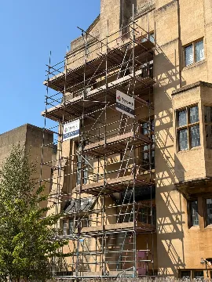

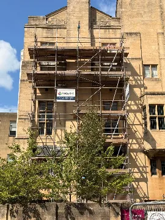
Brick Building Roof Framework Access
2 photos
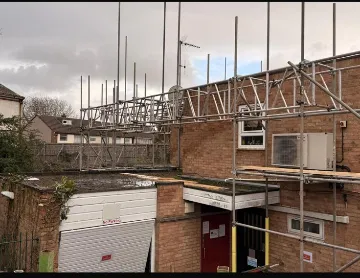

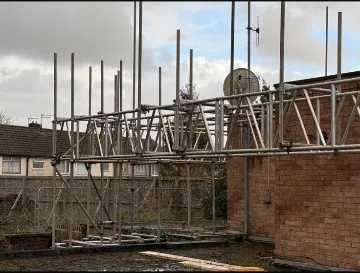
House Roof Platform Scaffold
3 photos


Brick Terrace Frontage Access
1 photos
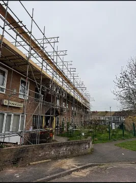
General Domestic
21 photos
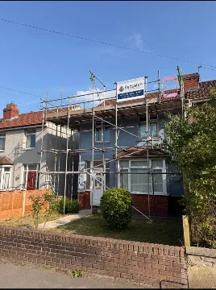

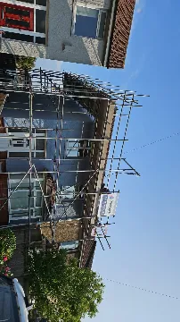

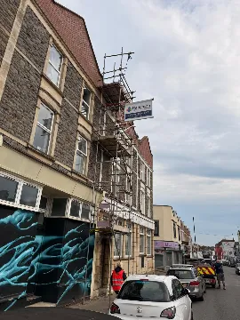

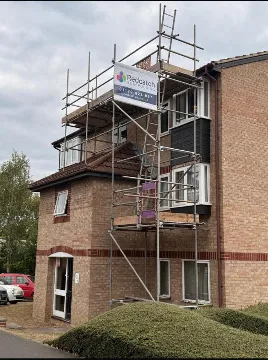

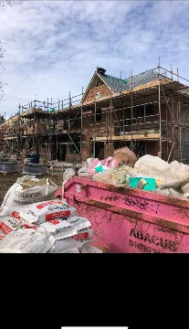

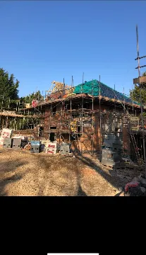

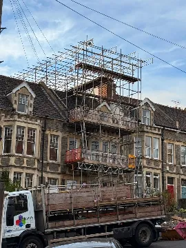

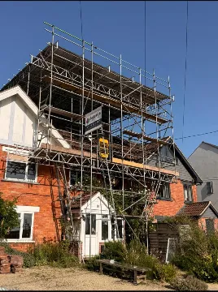

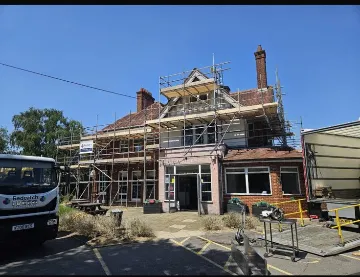

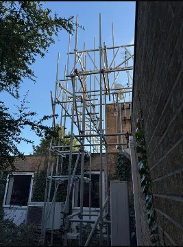

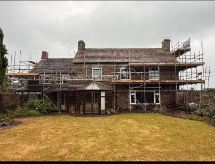

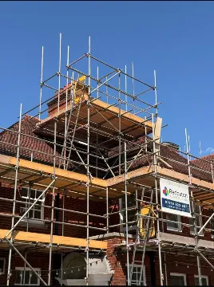

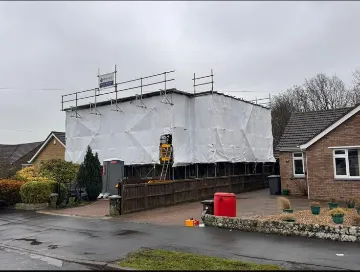

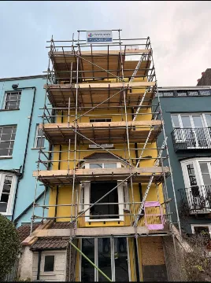

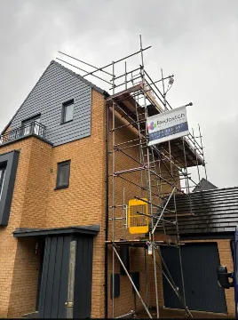

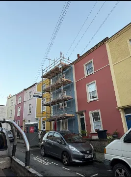

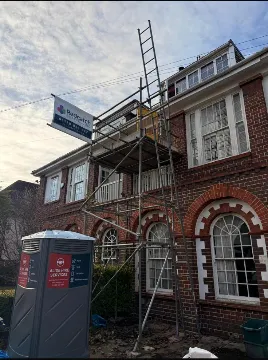

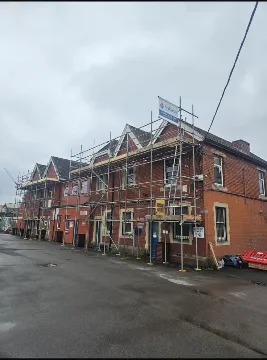

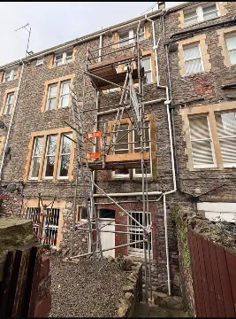

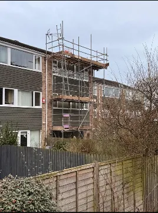

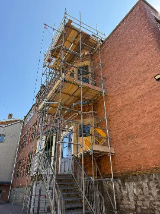
Portfolio category
Commercial Scaffolding
Long Stone Frontage Access
3 photos


General Commercial
8 photos
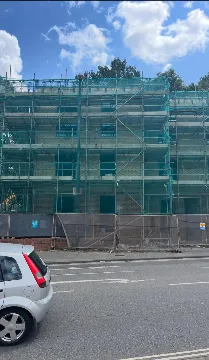

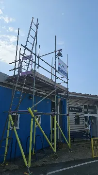

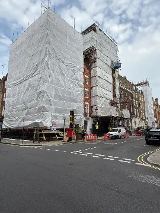

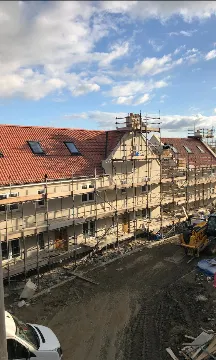

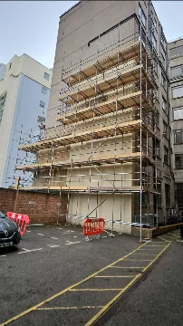

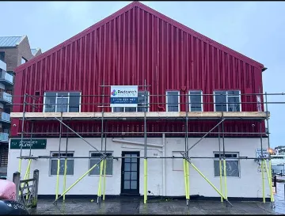

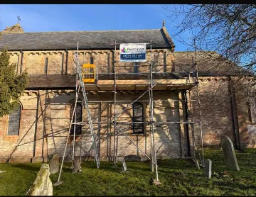

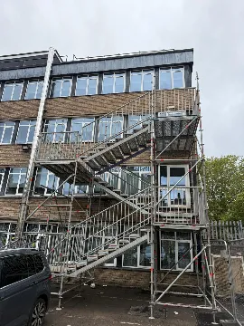
Redbrick Commercial Build
3 photos


Portfolio category
Temporary Roofs / False Roofs
Temporary Roof Over Stone Structure
4 photos


Wrapped Roof Scaffold Above Stone Walls
3 photos


Temporary Roof Construction Views
5 photos


General False Roofs
3 photos


Portfolio category
Category to confirm
Gabled Stone School Roof Access
6 photos


Tesco
6 photos


Rendered Building Opening Support
2 photos

Aerial Scaffold Site Views
4 photos


Low Level Construction Access
2 photos

Stone Corner Building Upper Access
6 photos


Interior Structural Support Installation
4 photos


Corner Victorian Building
5 photos


Special Roof Treatment
2 photos

For discussion
Not yet grouped
Not yet grouped
1 photos
No photographs match these filters.